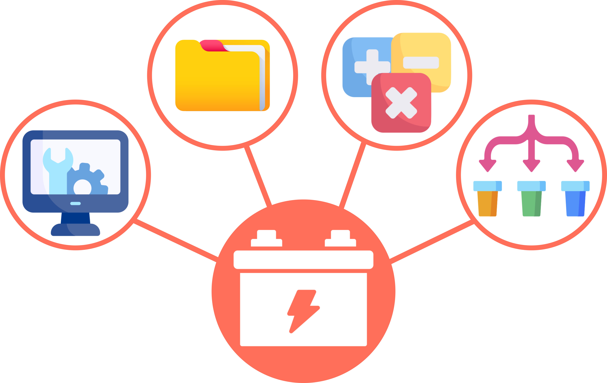

print("Hello World")Hello World
Python comes with “batteries included”.
The standard library provides built-in support for lots of common tasks, including the ability to interact with the operating system, open, read and write files, perform numerical & mathematical operations, and many more.
Let’s take a look at a simple example:
Functions take the form:
function_name(arguments)
where the arguments are the elements we want to apply the function to. Different functions require a different number and type of arguments.
In addition to print, there are other built-in functions that behave intuitively.
Measuring the length of something:
Finding the minimum of a list of values:
Finding the maximum of a list of values:
Functions may have default values for some arguments. For example, round will round off a floating-point number:
By default, it will round to zero decimal places if the second argument (the number of decimal places) is not provided.
Of course, you could always consult the official documentation
There is also a built-in help function that gives access to this info in your editor!
Help on built-in function max in module builtins:
max(...)
max(iterable, *[, default=obj, key=func]) -> value
max(arg1, arg2, *args, *[, key=func]) -> value
With a single iterable argument, return its biggest item. The
default keyword-only argument specifies an object to return if
the provided iterable is empty.
With two or more arguments, return the largest argument.? after a function name.
1.1 Printing fundamentals
1.2 Using min() and max() to assess values
1.3 Explore the effect of default arguments and improperly formatted function calls